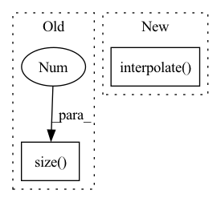

Pattern ID :2141
Before Change
B = x.data.size(0)
C = x.data.size(1)
H = x.data.size(2)
W = x.data.size(3 )
ws = stride
hs = stride
x = x.view(B, C, H, 1, W, 1).expand(B, C, H, stride, W, stride).contiguous().view(B, C, H * stride, W * stride)
return xAfter Change
def forward(self, x, target_size):
assert (x.data.dim() == 4)
_, _, H, W = target_size
return F.interpolate( x, size=(H, W), mode="nearest")
class Conv_Bn_Activation(nn.Module):
def __init__(self, in_channels, out_channels, kernel_size, stride, activation, bn=True, bias=False):In pattern: SUPERPATTERN
Frequency: 3
Non-data size: 2
Instances Fragment ID: 13995245
Project Name: tianxiaomo/pytorch-yolov4
Commit Name: 9d415b48fb7e1aad2ec47d1b51695fbd3d2b5cd1
Time: 2020-05-23
Author: mark.weber1@rwth-aachen.de
File Name: models.py
M Class Name: Upsample
N Class Name: Upsample
M Method Name: forward(3)
N Method Name: forward(2)
M Parent Class: nn.Module
N Parent Class: nn.Module
M File Name: models.py
N File Name: models.py
M Start Line: 20
M End Line: 29
N Start Line: 19
N End Line: 22
Before Change
def forward(self, x):
out = self.backbone(x)
if out.size(-1 ) != 1:
out = F.relu(out, inplace=True).mean([2, 3])
else:
out = out.squeeze()After Change
x[0] = out
out = self.classifer(*x)
if out.dim() != 5:
return F.interpolate( out, size=input_shape,
mode="bilinear", align_corners=False)
else:
return out
Fragment ID: 13995246
Project Name: sungbinlim/neuboots
Commit Name: ded678ac1ebc9480abda4b2edf1614501d3242db
Time: 2021-02-08
Author: phelahab@gmail.com
File Name: models/nbsnet.py
M Class Name: GeneralConvNet
N Class Name: SegNet
M Method Name: forward(1)
N Method Name: forward(2)
M Parent Class: nn.Module
N Parent Class: nn.Module
M File Name: models/nbsnet.py
N File Name: models/nbsnet.py
M Start Line: 53
M End Line: 59
N Start Line: 56
N End Line: 68
Before Change
// Return copy if upsampling factor is one.
if self.upsampling_filter.size(0 ) == 1:
return x
d = x.dim()After Change
x = x.transpose(1, 2)
x = self.pad(x)
x = F.interpolate(
x,
(x.size(-1) - 1) * self.scale_factor + 1,
mode="linear",
align_corners=True,
) [..., :-1]
y = x.transpose(1, 2).reshape(B, -1, D)
if d == 1: Fragment ID: 13995243
Project Name: sp-nitech/diffsptk
Commit Name: e6c55923477c74a650f2ccefe1a7287628539779
Time: 2023-05-23
Author: chin-yun.yu@qmul.ac.uk
File Name: diffsptk/core/linear_intpl.py
M Class Name: LinearInterpolation
N Class Name: LinearInterpolation
M Method Name: forward(2)
N Method Name: forward(2)
M Parent Class: nn.Module
N Parent Class: nn.Module
M File Name: diffsptk/core/linear_intpl.py
N File Name: diffsptk/core/linear_intpl.py
M Start Line: 78
M End Line: 93
N Start Line: 70
N End Line: 89